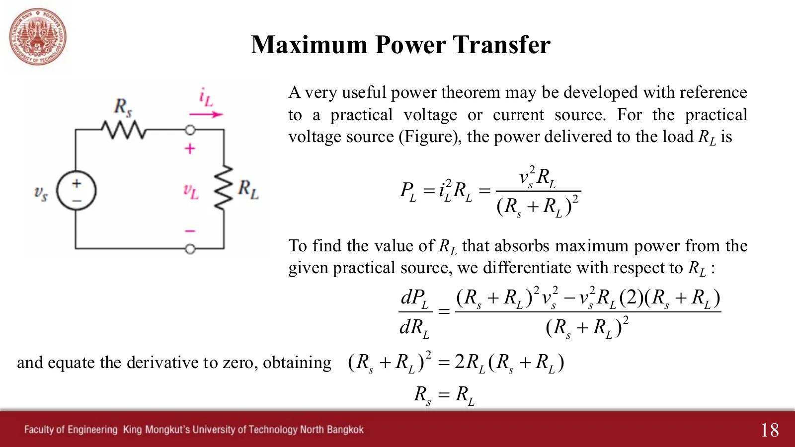
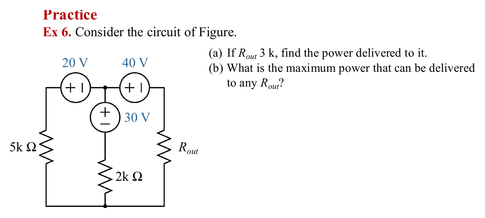
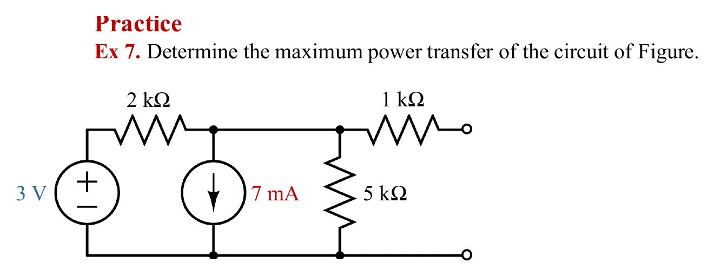
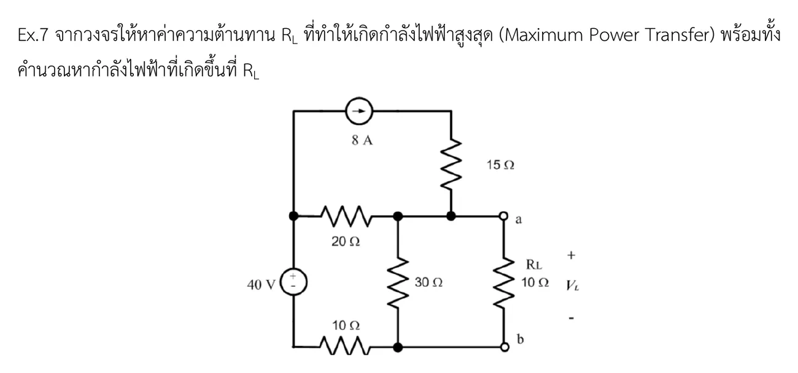
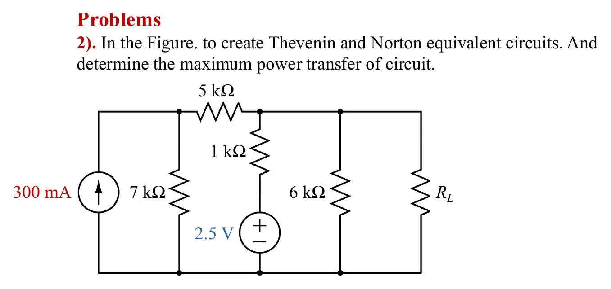

สไลด์หน้า 18: แหล่งจ่ายจริง (หรือวงจรใดก็ได้ผ่านวงจรสมมูลเทวินิน) ส่งกำลังให้โหลด \(p_L = v_s^2 R_L/(R_s + R_L)^2\) หาอนุพันธ์เทียบกับ \(R_L\) แล้วให้เป็นศูนย์ ได้ \(R_L = R_s = R_{th}\) และกำลังสูงสุด \(V_{th}^2/(4R_{th})\) ในห้องผู้สอนย้ำว่าต้องหาวงจรสมมูลเทวินินก่อน ภาพจำลองของแต่ละโจทย์วางวงจรจริงพร้อมโหลดที่เลื่อนได้คู่กับกราฟกำลัง: ก่อนหาวงจรสมมูล กราฟมีแต่จุดที่วัดได้จากวงจรจริง เมื่อได้ \(V_{th}\), \(R_{th}\) แล้ว เส้นโค้งที่ทำนายจะขึ้นมา และจุดที่วัดได้อยู่บนเส้นพอดี หน้านี้มี 4 โจทย์ เรียงทีละข้อ (Ex 6, Ex 7, แบบฝึกหัด Ex.7 และการบ้านข้อ 2) ก่อนหน้านั้นมีภาพจำลองหลอดไฟ
Slide p. 18: a practical source (or any circuit, through its Thévenin equivalent) delivers \(p_L = v_s^2 R_L/(R_s + R_L)^2\) to the load. Setting the derivative with respect to \(R_L\) to zero gives \(R_L = R_s = R_{th}\) and the maximum power \(V_{th}^2/(4R_{th})\). In class the teacher stressed that the Thévenin equivalent comes first. Each problem's simulation puts the real circuit with a load you can slide beside the power plot: before the equivalent is found the plot holds only powers measured in the real circuit; once \(V_{th}\) and \(R_{th}\) are known the predicted curve appears and the measured points sit on it. This page has 4 problems, one after another (Ex 6, Ex 7, exercise Ex.7 and homework 2), after a lamp simulation.
หลอดไฟสว่างตามกำลังที่ได้รับ เลื่อน \(R_L\) แล้วดูทั้งหลอดไฟและวงกลมบนกราฟ: กำลัง (เส้นสีเหลือง) ขึ้นถึงยอดที่ \(R_L = R_{th}\) พอดีแล้วลดลง ส่วนประสิทธิภาพ (เส้นประสีฟ้า แกนขวา) เพิ่มขึ้นเรื่อย ๆ และเป็น 50 % ที่ยอดของกำลัง เปลี่ยน \(V_{th}\) และ \(R_{th}\) ด้วย ยอดจะตาม \(R_{th}\) เสมอ
The lamp glows with the power it receives. Slide \(R_L\) and watch the lamp and the circle on the graph: the power (yellow) climbs to its peak exactly at \(R_L = R_{th}\) and falls again, while the efficiency (dashed blue, right axis) keeps rising and is 50 % at the power peak. Change \(V_{th}\) and \(R_{th}\) too; the peak always follows \(R_{th}\).



